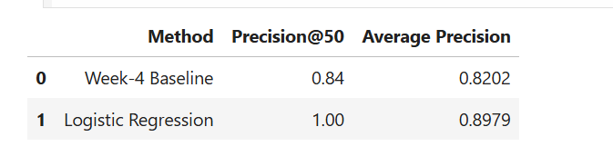
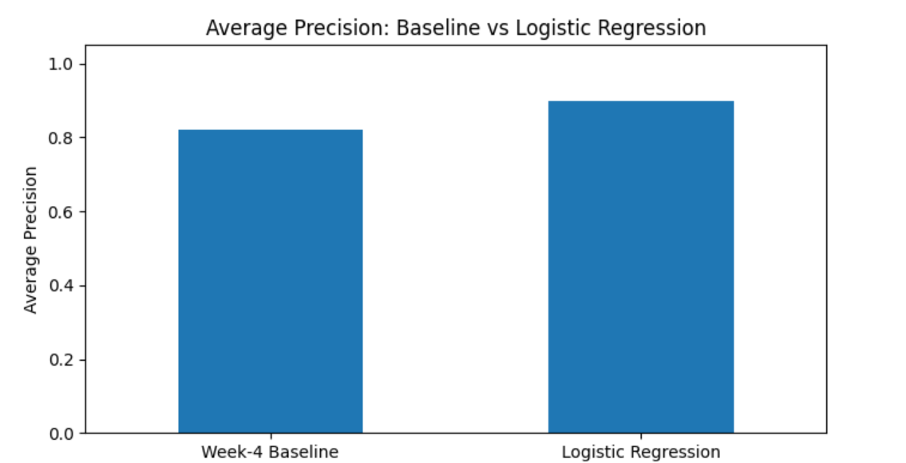

Abstract
This research asks whether observable page-level signals can be used to rank pages for content review. The analysis uses February 2026 page-level search and content information from the FlyRank internship warehouse and evaluates an interpretable Logistic Regression model against a transparent rule-based baseline. The observed March outcome proxy is whether a page recorded zero GSC clicks during the evaluation window. On the held-out evaluation set, Logistic Regression achieved a Precision@50 of 1.00 compared with 0.84 for the Week-4 baseline, while Average Precision was 0.8979 compared with 0.8202. The resulting ranking is intended as decision support for prioritizing human review, not as an automatic content decision or a causal claim about search performance.
Introduction / Problem Statement
Content teams may have many pages that could potentially require review, while available editorial resources are limited. Reviewing every page with the same priority is inefficient, particularly when observable page-level signals can provide a structured way to organize the review queue.
This project investigates whether a repeatable ranking approach can combine observable search and freshness signals to identify pages that deserve earlier human attention.
Can observable page-level signals be used to rank pages for review so that limited content resources can be focused on the most relevant opportunities first?
The analysis supports a content team's decision about which pages should be reviewed first for potential refresh, visibility review, or monitoring.
The output is a decision-support ranking rather than an automatic instruction to change content. The analysis does not claim that refreshing a page will cause improved search performance.
Data
This project uses the FlyRank internship warehouse,
release v20260703.
Tables Used
-
fact_content_daily_performance— daily page-level search and performance observations. -
dim_content— content-level metadata including content creation dates.
Model Features
- GSC impressions
- GSC clicks
- Content age in days
Observed Outcome
The March outcome proxy, went_dark, is defined as
1 when observed March GSC clicks are zero and
0 when March GSC clicks are greater than zero.
This outcome is treated as an observed proxy for evaluation rather than ground truth for successful content refresh.
Exclusions
- Future-window information
- Label-derived variables
- Product-generated priority or health fields
- Client names and domains
- Private search queries
- Credentials and raw exports
Methodology
The objective is a ranking system that combines multiple observable signals while remaining interpretable. Logistic Regression was selected because its behavior can be inspected more easily than a highly complex black-box model.
Analytical Workflow
Baseline
The Week-4 baseline is a transparent rule-based scoring system from 0 to 4. It combines content age and February search impressions. Higher scores represent stronger directional signals for review.
Logistic Regression
The Logistic Regression model combines three decision-time features: GSC impressions, GSC clicks, and content age in days.
Features are standardized before model fitting. Class weighting is used to account for the observed class distribution.
Validation Design
Evaluation Metrics
Precision@50 is the primary ranking metric. It measures the proportion of observed positive outcomes among the 50 highest-ranked pages.
Average Precision is also reported to evaluate ranking quality across the full held-out test set.
Leakage Check
Only February decision-time information is used as model features. March information is used only to construct the observed outcome. Future-window performance, label-derived fields, and product-generated priority or health fields are excluded from the model.
Results
The Logistic Regression model and the Week-4 transparent baseline were evaluated on the same held-out test population.
Metric Comparison
| Method | Precision@50 | Average Precision |
|---|---|---|
| Week-4 Baseline | 0.8400 | 0.8202 |
| Logistic Regression | 1.0000 | 0.8979 |
Precision@50 — Baseline vs Logistic Regression
Precision@50 provides the primary comparison for the highest-ranked 50 pages in the held-out evaluation population.

Average Precision — Baseline vs Logistic Regression
Average Precision provides an additional view of ranking quality across the held-out evaluation population rather than only the first 50 pages.

On this held-out evaluation population, Logistic Regression produced higher measured Precision@50 and Average Precision than the transparent Week-4 baseline. These results support the use of the model as a ranking approach within this evaluation setup, while not establishing how the system will perform on future data.
Limitations & Honest Framing
The results should be interpreted within the design of the experiment. Several limitations are important when translating the analysis into practical use.
1. Proxy Outcome
went_dark is based on zero observed March GSC clicks.
It does not directly measure whether refreshing a page would succeed.
2. Observational Analysis
The analysis identifies measured relationships in the available data. It does not establish that changing a page will cause improved search performance.
3. Legitimate Low-Visibility Pages
Low impressions or clicks may have legitimate explanations, including low search demand, seasonal behavior, or intentional targeting. A high score should therefore trigger inspection rather than automatic action.
4. Limited Feature Set
The current model uses three verified features: GSC impressions, GSC clicks, and content age. Additional valid signals could change the resulting ranking.
5. Evaluation Scope
The reported metrics come from one grouped held-out evaluation split. Performance may differ across other clients, periods, or future data.
Ranked Recommendations
The model ranking is translated into a practical review playbook. The purpose of the ranking is to help a content team determine where human investigation could begin.
Review for Refresh
Inspect freshness, relevance, content quality, and whether the page still addresses the intended search opportunity.
Review Visibility
Inspect search visibility, impressions, clicks, and alignment between the page and its observable search opportunity.
Monitor
Retain the page for monitoring rather than prioritizing immediate editorial review.
Public-Safe Ranked Queue
The following recommendation IDs are public-safe labels generated from the ranked held-out evaluation population. Client and content identifiers are intentionally excluded.
| ID | Model Score | Baseline | Age | Impressions | Clicks | Reason | Action |
|---|---|---|---|---|---|---|---|
| R01 | 0.8238 | 4 | 416 days | 1 | 0 | stale_low_visibility | review_refresh |
| R02 | 0.8238 | 4 | 416 days | 1 | 0 | stale_low_visibility | review_refresh |
| R03 | 0.8238 | 4 | 416 days | 1 | 0 | stale_low_visibility | review_refresh |
| R04 | 0.8238 | 4 | 416 days | 1 | 0 | stale_low_visibility | review_refresh |
| R05 | 0.8238 | 4 | 416 days | 1 | 0 | stale_low_visibility | review_refresh |
Reproducibility
The complete analysis is implemented in the repository's capstone notebook. The notebook contains the data construction, feature definitions, validation design, baseline calculation, model training, evaluation, leakage checks, and recommendation generation.
Reproducible Configuration
Reproducibility Principles
- Use only information available at the defined decision point for model features.
- Keep the observed outcome separate from future feature construction.
- Evaluate the baseline and model on the same held-out population.
- Keep product-generated priority or health fields outside the model.
- Preserve the notebook as the executable record of the workflow.
From Analysis to Decision Support
The workflow converts raw page-level observations into a structured review queue:
This separation keeps the machine-learning output as a prioritization signal while leaving the final content decision with the responsible human team.
Acknowledgments & Data Credit
This project was completed as part of the FlyRank ML Internship capstone.
Built on the FlyRank ML Internship dataset .
This work is intended as a reproducible demonstration of machine learning for content-review prioritization. The results describe observed evaluation behavior and are not claims about causality, search-engine algorithms, or guaranteed future performance.